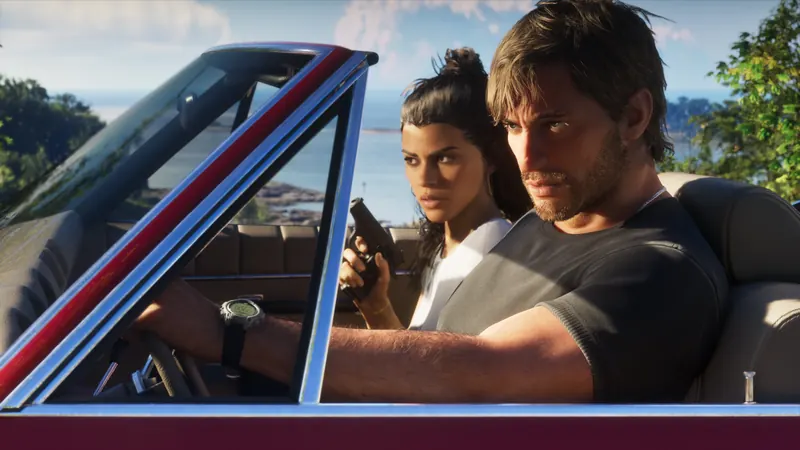

19 answers
GTA 6 questions: how the game works
Straight answers about how GTA 6 plays: missions, saving, cheats, endings and more.

- Can you replay missions in GTA 6?GTA 6 has no mission replay. The only workaround is keeping an older save in a separate slot before each mission. Here's how.
- How do you switch between Jason and Lucia in GTA 6?Free switching between Jason and Lucia unlocks around Chapters 2 and 3. How to switch, and when the game won't let you.
- How long is GTA 6?Rockstar's Rob Nelson put the main story at about 80 hours; reviewers report 50 to 70. What reviews say about 100% completion.
- Does GTA 6 autosave? How to save your gameYes, GTA 6 autosaves, and it has 15 manual save slots. How to save, when you can't, and why cheats block saving.
- Can you buy houses or businesses in GTA 6?What's confirmed about buying property in GTA 6: homes come with the story, garages can be bought, and businesses are unconfirmed.
- Does GTA 6 have cheats? All codes and how to unlock themAll 61 GTA 6 cheats with their unlock requirements, plus the 19 codes found so far for PS5 and Xbox: money, infinite ammo, body armor and more.
- Does GTA 6 have a first-person mode?GTA 6 doesn't have a full first-person mode at launch. You only get a first-person view when aiming certain weapons.
- How many endings does GTA 6 have?GTA 6 has multiple endings and your choices matter. What reviewers say about Jason and Lucia's relationship and missable content.
- What languages is GTA 6 in?GTA 6's voice acting is English only, with subtitles and menus in other languages. What the PlayStation and Xbox store listings show.
- Can you play GTA 6 offline?GTA 6 is single-player and supports offline play, but you need internet to download it, even if you buy the physical edition.
- What is GTA 6's review score?GTA 6 holds a 99 on Metacritic based on launch-day reviews. A roundup of major outlets' scores and how the average may change.
- How do you lose the cops in GTA 6?GTA 6 police remember what you look like and track a criminal profile. Changing clothes and your getaway car helps you slip away.
- How many trophies and achievements does GTA 6 have?Sources point to 55 trophies and achievements, with a Platinum on PS5. What's known and what Rockstar hasn't confirmed.
- What weapons are in GTA 6?GTABase lists 205 confirmed weapons with more to find. Weapon categories, ammo types and how to get guns back at Ammu-Nation.
- Does GTA 6 have co-op?There's no confirmed co-op for GTA 6's story. What Rockstar has said, what's rumor, and where online multiplayer stands.
- What are the missions in GTA 6? Full list by chapter and missablesEvery GTA 6 mission by chapter, per GTABase, including the four optional missions you can miss. Chapters 2 to 5 are collapsed to avoid spoilers.
- What secrets and Easter eggs are in GTA 6? Everything found so farGTA 6 secrets found in the first days: the alien abduction and its trophy, the Easter egg atop Vice City's tallest tower, Bigfoot, Dexter's apartment and more.
- Who is Mandy in GTA 6, and can you romance her?Mandy is Brian's tenant in Key Lento whom Jason meets in the Pipework mission. You can't romance her. Who plays her and what's known about her.
- How to fix the railing and Jason's house in GTA 6All four Jason's house projects in GTA 6 (steps, roof, railing and wall), where to find them, and why you must finish them before picking up Lucia.